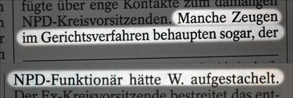

My Personal Hohlspiegel
Die letzte Seite der wöchentlichen Gazette Der SPIEGEL ist, wie wir alle wissen, journalistischen Ausrutschern gewidmet (abgesehen davon, dass gelegentlich auch missverständlich geschriebene Kleinanzeigen aufgeführt werden). Unter der Rubrik "Hohlspiegel" werden von Lesern eingesandte, lustige und zum Teil grotesk falsch formulierte Textstücke aus Zeitungen abgedruckt.
Beim Lesen des aktuellen SPIEGELs (Nr. 28/2008) entdeckte ich ebenfalls einen ganz heißen Kandidaten für diese Rubrik. Und zwar steht im Artikel "Richtig vor die Glocke" (S. 54f.) folgendes:

Man kann jemanden anstacheln oder sich auftakeln. Man kann aufwiegeln oder anstiften. Aber was zum Teufel bedeutet 'aufstacheln'? Klingt für mich wie eine légère Umschreibung des sexuellen Akts. Quasi ein Synonym für Pieken oder Anstechen.
Wenn alles glatt läuft, wird diese Stilblüte nächste Woche auch im Hohlspiegel zu besichtigen sein. Vorausgesetzt es wird "gemeldet". Ich persönlich habe es gebloggt und damit meine Schuldigkeit getan…
Nachtrag
Das Wort 'aufstacheln' existiert in dieser Form in der deutschen Sprache, es ist nur dem Autor selbst höchst suspekt. Von daher ist die Überschrift 'My Personal Hohlspiegel' intuitiv passend gewählt.
7 Kommentare zu "My Personal Hohlspiegel"
- Externe Links im selben Fenster öffnen
- Externe Links in neuem Fenster öffnen
Rick
Dürfte so ein regionales Ding sein, weil hierzulande wird auch aufgestachelt was das Zeuchs hält, aber dafür weniger angestachelt. Deutsche Sprache, regionale Sprache.
Im Grund genommen kommt Aufstacheln ja auch dem Tierreich, und bezeichnet eine Tätigkeit, die täglich (außer zu Winterschlafzeiten) jeder ordentliche Igel und jedes ordentliche Stachelschwein tut bevor er/sie den Bau verlässt, um nicht als Nacktmulch unter die Leute zu gehen, weil das gehört sich als Stachelschwein oder Igel nicht. Und am abend vorm Fernseher ist man als Stachelschwein schon froh die ganzen schweren Stacheln mal in die Ecke in den Hutständer ablegen zu können...
Klaus
Aufstacheln im Sinne von Aufrüsten? Erinnert mich an den Fall, als eine Schwedische Politikerin mit einem Messer verletzt, aber nicht erstochen wurde. Bei Schüssen hieße es dann ja "angeschossen" und wir fragte uns, ob es in diesem Fall "angestochen" heißt.
Herschel Rubinstein
@rick: das könnte natürlich sein, aber gehört habe ich die redewendung so glaube ich noch nie.
ansonsten ist das leben eines igels bzw. stachelschweins natürlich auch nicht leicht. da hast du sicherlich recht.
magnus
http://www.dict.cc/deutsch-englisch/zur+Rebellion+aufstacheln.html
Herschel Rubinstein
okay, es gibt den begriff. dann wird das wohl nichts mit dem hohlspiegel. trotzdem würde ich das so im täglichen sprachgebrauch nicht benutzen.
Dr. D. Duden
Ein Blick in den Duden hätte genügt um zu wissen, das "aufstacheln" ein ganz normales deutsches Wort ist.
Herschel Rubinstein
ich lasse mir doch von einem blick in den duden nicht meinen beitrag versauen. gewissenhafte recherche ist was für journalisten, monsieur duden